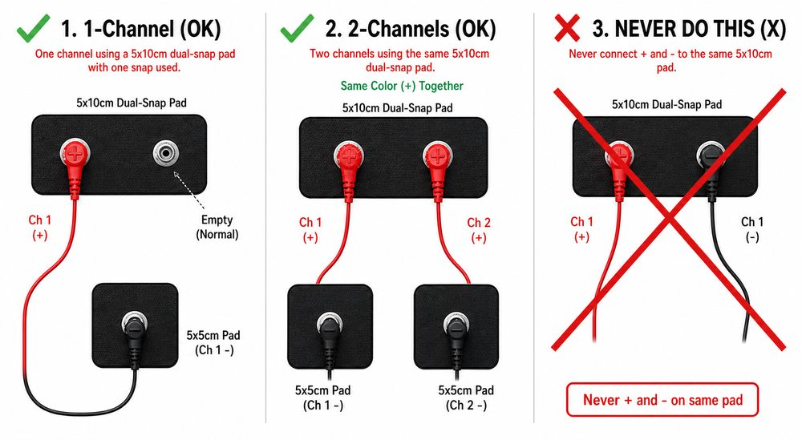
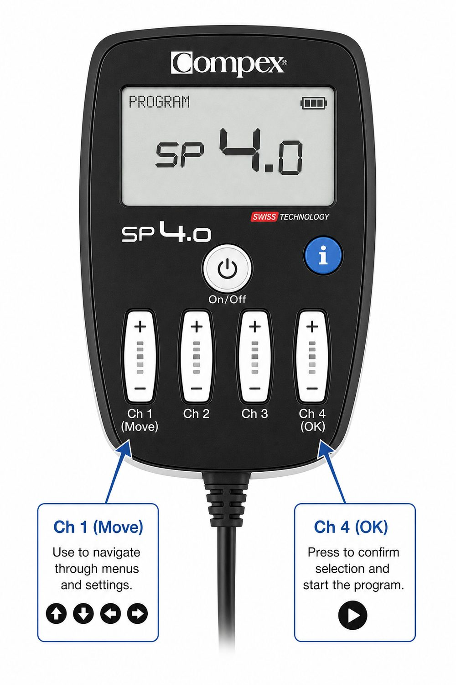

🎯 내 목표
목표를 고르면 주간 플랜이 만들어집니다
켜 둔 목표의 요일별 추천 모드가 아래 주간 플랜에 합쳐집니다. 이름은 ✏️ 로 바꿀 수 있어요.
📅 이번 주 플랜
🧭 자극 유형별 3가지 원칙
모드마다 패드·자세·강도 기준이 다릅니다.
T
진통 TENS (Pain management TENS, Tendinitis)
패드: 아픈 부위 양옆·위아래 감싸기 · 자세: 편안한 휴식 · 강도: 기분 좋은 찌릿함(근수축이 나면 MI-TENS가 자동 하향)
패드: 아픈 부위 양옆·위아래 감싸기 · 자세: 편안한 휴식 · 강도: 기분 좋은 찌릿함(근수축이 나면 MI-TENS가 자동 하향)
R
근육 튕김·이완 (회복/마사지 전체, Muscle pain, Capillarisation 등)
패드: 목표 근육 중앙·양 끝 · 자세: 편안한 휴식 · 강도: 근육이 눈에 보일 만큼 톡톡 튀는 범위(MI-RANGE 체크 확인)
패드: 목표 근육 중앙·양 끝 · 자세: 편안한 휴식 · 강도: 근육이 눈에 보일 만큼 톡톡 튀는 범위(MI-RANGE 체크 확인)
E
강력한 근수축 (Conditioning, Rehabilitation, Fitness)
패드: 큰 패드+작은 패드(운동점+근육 끝) · 자세: 관절을 고정한 등척성 · 강도: 참을 수 있는 최대치(아픈 관절·염증기에는 약하게 또는 보류)
패드: 큰 패드+작은 패드(운동점+근육 끝) · 자세: 관절을 고정한 등척성 · 강도: 참을 수 있는 최대치(아픈 관절·염증기에는 약하게 또는 보류)
⚡ SP 4.0 30개 프로그램
기기 메뉴의 영문명 그대로입니다. 검색·필터 후 펼쳐서 진입 순서와 패드 그림을 확인하세요.
🩹 부위별 패드 부착
부위를 고르면 공식 부착 위치 그림과 주의점이 나옵니다.
🔌 5×10cm 단자 2개 패드 연결법
큰 패드에 스냅 단자가 2개 있을 때는 3가지만 기억하면 됩니다. 패드 자체에는 극이 없고 꽂는 선 색깔로만 구분됩니다.

① 1채널만 쓸 땐 1개만 꽂고 1개 비우기(정상)
② 2채널 쓸 땐 같은 색(+)끼리 나란히
③ 같은 패드에 빨강(+) + 검정(-) 동시 연결 금지
🎛️ 버튼 위치와 역할

전원(좌측 하단) · Ch 1 +/- 메뉴 이동 · Ch 4 +/- 확인·시작 · i 버튼(최근 5개 / 동시 강도 조절)
1
패드 부착 후 전원 — 피부에 패드를 먼저 붙이고 리드선을 연결한 뒤 On/Off. 하나의 케이블 양쪽 끝에는 반드시 서로 다른 패드.
2
카테고리 선택 — Ch 1 +/- 로 이동 → Ch 4 +/- 로 확인.
3
세부 프로그램 선택 — 일부 근력 프로그램은 1~5단계 사이클 선택이 뜨고, 처음엔 1단계부터 주 3회 4~6주.
4
MI-SCAN 자동 측정 — MI 센서 연결 시 시작 직전 잠깐 가만히.
5
채널별 강도 올리기 — Ch 1~4 +. i 버튼은 여러 채널 동시 조절, On/Off 짧게 누르면 일시정지.
⚠️ 절대 금기 & 주의사항
모든 모드 공통
- 부착 금지 부위: 목 앞쪽(경동맥), 가슴 정면 심장 부위(전류가 심장을 가로지르는 배치), 머리·안면, 상처·발진·정맥류·주사 바늘 자국 바로 위
- 사용 금지 대상: 심박조율기 등 체내 이식형 전자장치 보유자, 임신 중 복부·허리, 간질 병력, 심부정맥 혈전증
- 사용 환경: 운전 중, 수면 중, 욕실·물가에서 절대 사용 금지
- 통증 관절: 염증·통증이 있는 관절 주변에는 고강도 근수축(Conditioning/Fitness) 대신 TENS → 회복/마사지 순서로
- 패드 관리: 젤이 마르거나 따가우면 즉시 멈추고 위치를 옮기거나 새 패드로 교체
🧘 어깨 스트레칭 4종
라운드숄더 · 충돌증후군 · 유착성 관절낭염 안전 루틴. 통증 직전까지만, 호흡은 멈추지 않기.
⚡ 스트레칭 직후 컴팩스 코스
근육·관절을 풀어 준 직후, 현재 상태에 맞춰 연결하세요.
📊 이번 주 워크로드
0세션
0총 분
–평균 강도
➕ 세션 기록
기기를 마친 뒤 강도·시간·체감을 남겨 두면 다음 주 조절에 쓸 수 있습니다.
🗂 최근 기록
💾 백업
기록·목표는 이 브라우저에만 저장됩니다. JSON으로 내보내 두면 기기를 바꿔도 이어집니다.